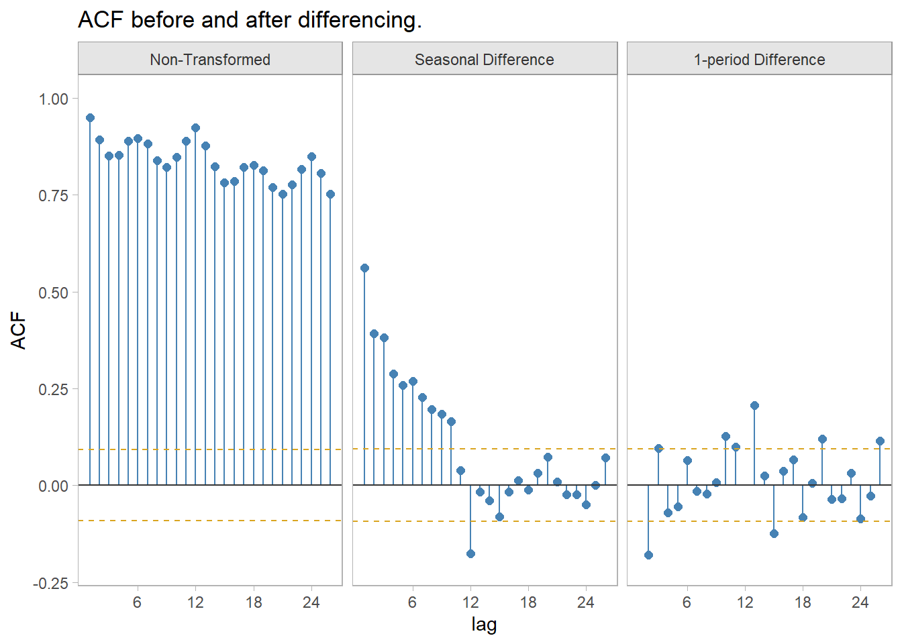

Chapter 5 ARIMA
Whereas exponential smoothing models describe the trend and seasonality, ARIMA models describe the autocorrelations.
An autoregressive (AR(p)) model is a multiple regression with p lagged observations as predictors.
\[y_t = c + \phi_1 y_{t-1} + \phi_2 y_{t-2} + \dots + \phi_p y_{t-p} + \epsilon_t\]
A moving average (MA(q)) model is a multiple regression with q lagged errors as predictors.
\[y_t = c + \epsilon_t + \theta_1 \epsilon_{t-1} + \theta_2 \epsilon_{t-2} + \dots + \theta_p \epsilon_{t-q}\]
An autoregressive moving average (ARMA(p, q)) model is a multiple regression with p lagged observations and q lagged errors as predictors.
\[y_t = c + \phi_1 y_{t-1} + \dots + \phi_p y_{t-p} + \theta_1 y_{t-1} + \dots + \theta_p y_{t-q} + \epsilon_t\]
An ARMA model with differencing (ARIMA(p,d,q)) model is an ARMA model with d levels of differencing.
Whereas exponential smoothing models can handle non-constant variance with multiplicative errors and seasonality, autoregressive models require that you explicitly transform the data into a stationary time series with constant variance. A stationary time series is one in whose statistical properties do not depend on the time at which the series is observed. Stationary time series can have patterns, but no regular long term patterns.
5.1 Tranformations and Differencing
The first step in any modeling exercise is plotting the data to identify unusual observations and non-constant variance. Let’s work through the process with the fpp::usmelec data set of us monthly electricity generation. You can see in Figure 5.1 that this data has non-constant variance.
Figure 5.1: This data series has non-constant variance.
There are an infinite number of transformations, but the common ones (in increasing strength) are: square root, cube root, log, and inverse. In Figure 5.2, the square root, cube root, and log transformations are not quite strong enough to even out the error variance, but the inverse transformation is a little too large. We need a transformation somewhere in between.
elec %>%
mutate(sqrt = sqrt(value), cubert = value^(1/3), log = log(value), inverse = 1/value) %>%
pivot_longer(-index) %>%
mutate(
name = factor(
name,
levels = c("value", "sqrt", "cubert", "log", "inverse"),
labels = c("y", "sqrt(y)", "cubrt(y)", "log(y)", "1 / y")
)
) %>%
ggplot(aes(x = index, y = value)) +
geom_line() +
facet_wrap(vars(name), scales = "free_y") +
theme_light() +
labs(
title = "US monthly electricity generation with standard transformations.",
x = NULL)Figure 5.2: Standard transformations under- or over-shoot constant variance.
The Box-Cox transformation can find the optimal transformation (Figure 5.3).
(lambda <- elec %>%
features(value, features = guerrero) %>%
pull(lambda_guerrero))
## [1] -0.4772531
elec2 <- elec %>%
mutate(value = box_cox(value, lambda))elec2 %>%
ggplot(aes(x = index, y = value)) +
geom_line() +
theme_light() +
labs(title = glue("US monthly electricity generation with lambda = {scales::number(lambda, accuracy = .001)} Box-Cox transformation."), x = NULL)Figure 5.3: Box-Cox transformation produces constant variance.
After transforming the response variable, use differencing of successive observations to stabilize the level. In the case of seasonal data, take a seasonal difference (for monthly data, that means take the 12 observation difference), then possibly take a second one-observation difference (Figure ??).

elec3 <- elec2 %>%
mutate(value = difference(value, 12)) %>%
mutate(value = difference(value, 1))
(elec_jung <- elec3 %>% features(value, ljung_box, lag = 10))## # A tibble: 1 × 2
## lb_stat lb_pvalue
## <dbl> <dbl>
## 1 72.9 1.20e-11The ACF of the twice-differenced values is white noise (Ljung-Box Q = 72.94, p = 0.000).
elec3 %>%
ggplot(aes(x = index, y = value)) +
geom_line() +
theme_light() +
labs(title = glue("US monthly electricity generation with Box-Cox and differencing."), x = NULL)## Warning: Removed 13 rows containing missing values (`geom_line()`).(#fig:xform_and_diff)Box-Cox transformation plus double-differencing produces stationary time series with constant variance.
R function auto.arima() from the forecast package chooses the optimal ARIMA model parameters using the Akaike criterion.6
Use a unit root test to verify stationarity.
## # A tibble: 1 × 2
## kpss_stat kpss_pvalue
## <dbl> <dbl>
## 1 0.0159 0.1The p-value is reported as .1 if it is greater than .1. In this case the test statistic of 0.0159 is smaller than the 1% critical value so the p-value is greater than .1. The null hypothesis is not rejected, meaning the data is assumed stationary.
5.2 Autoregressive Models
Autoregressive models forecast the response variable as a function of past observations.
\[y_t = c + \phi_1 y_{t-1} + \phi_2 y_{t-2} + \dots + \phi_p y_{t-p} + \epsilon_t\]
where p is the order of regression. The model is denoted AR(p). For an AR(1) model, a \(\phi_1\) = 0 and c = 0 would be the equivalent to white noise. If \(\phi_1\) was 1, then the model would be a random walk. If \(phi_1\) was 1 and c was non-zero then the model would be random walk with drift.
5.3 Moving Average Models
A moving average (MA(q)) model is a multiple regression with q lagged errors as predictors.
\[y_t = c + \epsilon_t + \theta_1 \epsilon_{t-1} + \theta_2 \epsilon_{t-2} + \dots + \theta_p \epsilon_{t-q}\]
where \(\epsilon_t\) is white noise and q is the order of the regression. The model is denoted AR(q).
5.4 Non-Seasonal ARIMA
If you combine differencing with the AR and MA model, you get a non-seasonal ARIMA model (autoregressive integrated moving average) (in this context integration is the opposite of differencing).
\[y'_t = c + \phi_1 y'_{t-1} + \dots + \phi_p y'_{t-p} + \theta_1 \epsilon_{t-1} + \theta_2 \epsilon_{t-2} + \dots + \theta_p \epsilon_{t-q} + \epsilon_t\]
where \(y'_t\) is the differenced series (possibly multiple differences) and d is the order of differencing. The model is denoted ARIMA(p, d, q).
You can use the Akaike criterion to compare models of the same class, but not different models, so do not use it to compare an ARIMA model to an ETS model. You cannot use the Akaike criterion for models of different levels of differencing.↩︎